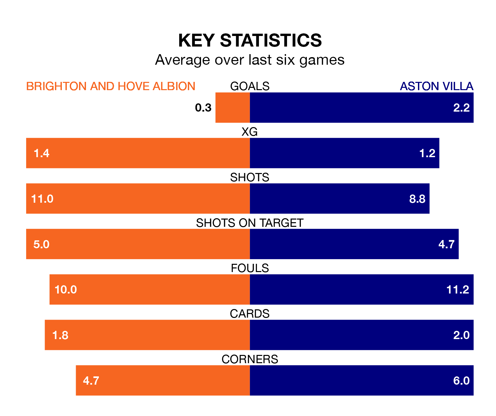

Brighton and Hove Albion are on a terrible run ahead of hosting Aston Villa at the American Express Community Stadium on Sunday, with just two points collected from their last six games.
Brighton have picked up two draws and four losses in their last six Premier League games, and face a Villa side whose last six games have brought three wins and two draws.
With 73 goals in 35 games so far this season, Villa are scoring more than average in the league with 2.1 goals per game. And they are conceding fewer than average, letting in 52 goals at a rate of 1.5 per game.
Brighton, meanwhile, are below average scorers, with 1.5 goals per game, compared to a league average of 1.6. They have conceded 1.7 goals per game.
In the last 10 years, Brighton and Villa have played each other on 13 occasions. Brighton won one of them, Villa seven, and they drew five times.
On average, Brighton scored 0.9 goals and the Villa 1.9 in those matches.
Their last meeting was on September 30, when Villa won 6-1 at home.
In Ollie Watkins, the Villa have one of the league's most on-form strikers so far this season. He has notched 19 goals in 34 appearances, to sit third in the scoring charts.
His goal rate of one every 157 minutes is quicker than that of João Pedro, Albion's top scorer with a goal every 221 minutes, and a total of eight goals in 28 games.
The visitors are fourth in the table after 35 games, of which they have won 20 and drawn seven, earning 67 points.
The home team are eight places behind Villa in 12th, with 11 wins and 11 draws putting them on 44 points.
Brighton's last match was on April 28, a 3-0 loss against AFC Bournemouth.
Villa drew 2-2 with Chelsea last time out, on April 27, with Marc Cucurella (own goal) and Morgan Rogers on the scoresheet.
Sunday's match will be refereed by Robert Jones, who has taken charge of 19 Premier League games so far this season, issuing five red cards and booking 89 players. He has awarded five penalties.
The last Brighton game Jones refereed was a 4-0 away loss to Luton Town on January 30. His last Villa match was their 2-1 loss at home against Manchester United on February 11.
Updated: 12:00 (UTC), 02/05/24